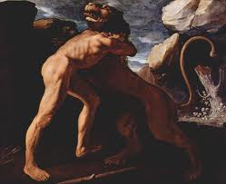

 Se trata del m�s c�lebre de los h�roes griegos, el paradigma de la virilidad y el adalid del orden ol�mpico contra los monstruos ct�nicos. Su extraordinaria fuerza es el principal de sus atributos, pero tambi�n lo son el coraje, el orgullo, cierto candor y un formidable vigor sexual. Se le considera el ancestro de los Reyes de Esparta y la influencia de esta polis en la Grecia Arcaica y Cl�sica fue una de las razones de la difusi�n de su leyenda y su culto.
 Un elemento principal de las conocidas tragedias que giran en torno a H�rcules proviene del odio que la diosa Hera, esposa de Zeus, le ten�a. Heracles era hijo de Zeus y Alcmena, y por tanto su mera existencia demostraba al menos una de las muchas infidelidades de aqu�l.
Un elemento principal de las conocidas tragedias que giran en torno a H�rcules proviene del odio que la diosa Hera, esposa de Zeus, le ten�a. Heracles era hijo de Zeus y Alcmena, y por tanto su mera existencia demostraba al menos una de las muchas infidelidades de aqu�l.